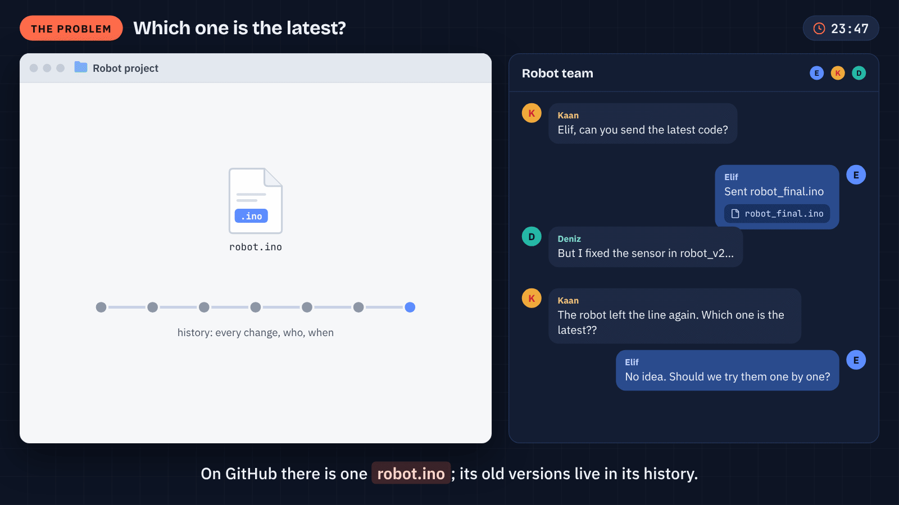
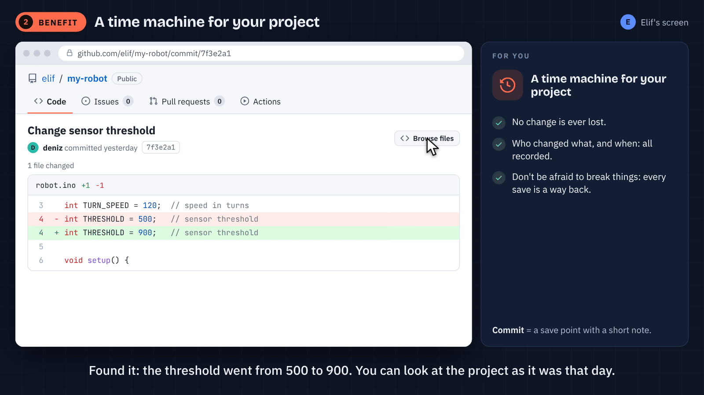
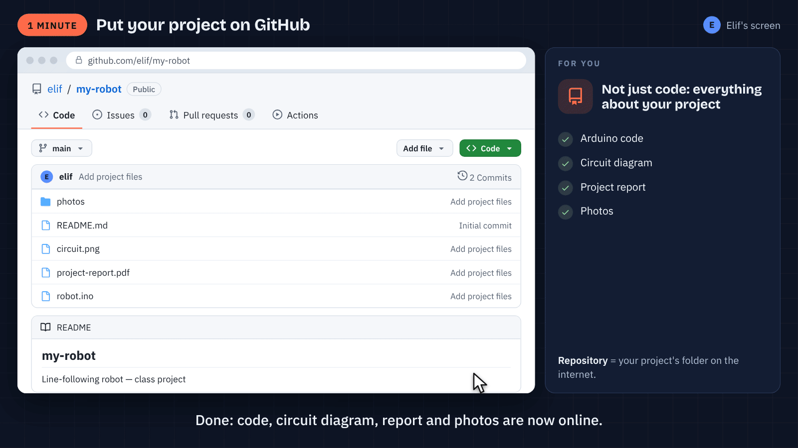
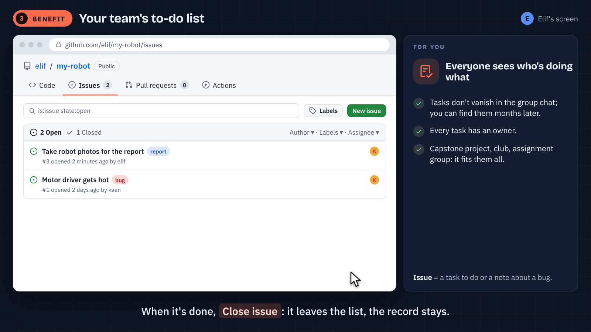
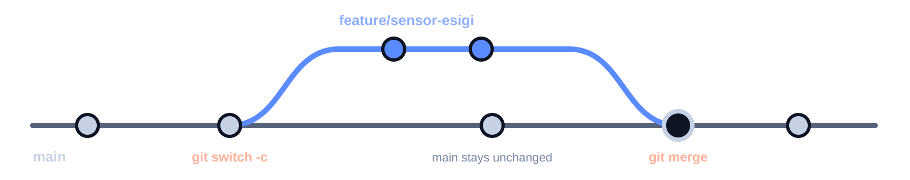
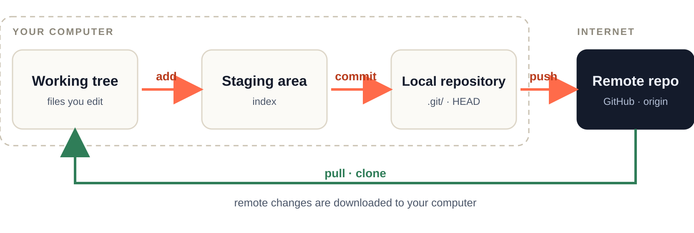
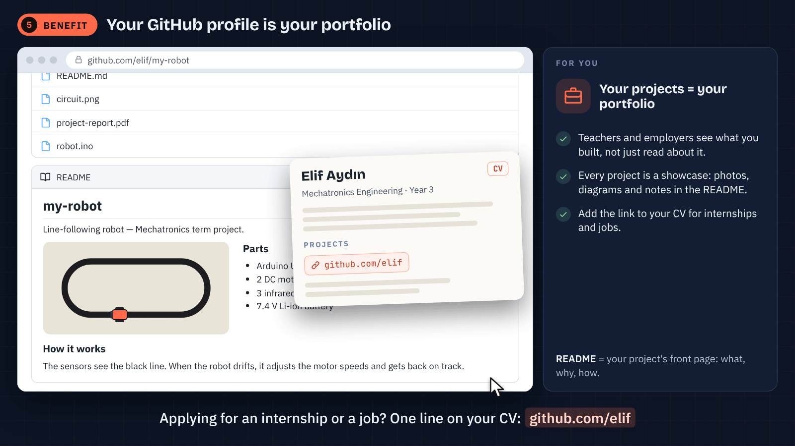

Today it loses the line. The deadline is approaching.

Elif + Deniz · One robot · One shared decision
GIT AND GITHUB · 45 MINUTES
Today it loses the line. The deadline is approaching.
Arif Solmaz
İSTÜN Mechatronics Engineering
Elif + Deniz · One robot · One shared decision
01 · FOLLOW THE ROBOT’S TRAIL
Elif and Deniz each sent a different “final version”.

Calling a file “FINAL” does not record its history.
01 · FOLLOW THE ROBOT’S TRAIL
The team needs the change’s history and reasoning.
Code files, several copies, and two people’s memories.
What changed? Why? Which version should we continue from?
First goal: compare the records, not people’s memories.
01 · FOLLOW THE ROBOT’S TRAIL
There is a clue in the history: threshold 500 → 900.

We found the change. We have not yet established the right threshold.
01 · FOLLOW THE ROBOT’S TRAIL
History lives on the computer. GitHub makes collaboration visible.
Records changes and shows how we arrived at a version.
Hosts the repository and brings tasks, proposals, and review together.
Git also works with Git servers other than GitHub.
01 · FOLLOW THE ROBOT’S TRAIL
The robot’s code alone does not explain the project.

Repository = project files + recorded history
01 · FOLLOW THE ROBOT’S TRAIL
We are seeing the old and new values of one variable.
robot.ino
- const int ESIK = 500;
+ const int ESIK = 900;− previous line · + next line · commit: a recorded state
01 · FOLLOW THE ROBOT’S TRAIL
Git shows the change. We validate the threshold on the robot.
500 and 900 are example values in this fictional scenario.
01 · FOLLOW THE ROBOT’S TRAIL
Issue: “Investigate the IR sensor threshold.”

GIF: the issue interface using a photo task. Our task is the sensor threshold.
01 · FOLLOW THE ROBOT’S TRAIL
We will develop the candidate solution on a separate branch.

A branch organizes a trial. It does not prove the change is correct.
02 · MOVE THE CHANGE
Not yet. Editing, recording, and sharing are separate steps.

Edit → add → commit → push · Get the team’s updates: pull
02 · MOVE THE CHANGE
Elif brings the project’s files and history onto her computer.
git clone <repository-url>
cd robot-projemClone brings history. A ZIP does not create a local Git history.
02 · MOVE THE CHANGE
Elif creates a separate line for the sensor task.
git switch -c feature/sensor-esigi
git branchActive branch: feature/sensor-esigi · This does not change main.
02 · MOVE THE CHANGE
We prepare 900 → 500 as a candidate change.
robot.ino
- const int ESIK = 900;
+ const int ESIK = 500;Save → git status · History and GitHub have not changed yet.
02 · MOVE THE CHANGE
We select the sensor change. Other work can wait.
git add robot.ino
git diff --cachedAdd selects. There is no new commit or upload yet.
02 · MOVE THE CHANGE
A commit keeps the change and its purpose in history.
git commit -m "Candidate return to 500 for IR sensor threshold"
git log --onelineThe record is local. “Candidate” means validation is still pending.
02 · MOVE THE CHANGE
After push, the candidate is visible on GitHub’s task branch.
git push -u origin feature/sensor-esigiA shared candidate ≠ an accepted change in main
03 · DECIDE TOGETHER
A pull request proposes a change for the team to evaluate.
feature/sensor-esigi → main
Problem: The robot loses the line.
Candidate: ESIK, 900 → 500.
Reason: Investigate a return to the old value.
Validation: Measurement and behavior records pending.Issue: what do we need? · PR: should we accept this proposal?
03 · DECIDE TOGETHER
The changed line needs a clear reason and expected behavior.
Feedback → new commit on the same branch → updated PR
03 · DECIDE TOGETHER
Elif’s candidate is 500. Incoming main has 700.
robot.ino
<<<<<<< HEAD
const int ESIK = 500;
=======
const int ESIK = 700;
>>>>>>> mainWe are on the task branch, merging main into it. Git cannot choose the right value.
03 · DECIDE TOGETHER
In this example, Elif and Deniz continue with the 500 candidate.
robot.ino
const int ESIK = 500;Removing conflict markers does not prove the robot’s problem is fixed.
03 · DECIDE TOGETHER
With sufficient review and validation, the proposal can enter main.
A candidate on a task branch, open to discussion and changes.
A decision in shared main, with reasoning available in the project.
Make it visible → review it → accept it
03 · DECIDE TOGETHER
We update local main separately.
git status
git switch main
git pull --ff-onlyPush shares. Pull gets updates. A pull request proposes a merge.
04 · HAND OVER THE PROJECT
We leave running instructions alongside the code.
# Line-Following Robot
## Hardware
Arduino, IR sensors, motor driver.
## Getting started
Follow the wiring diagram.
Validate the threshold in your own conditions.
Record your observations and reasons for changes.Purpose · hardware · wiring · running · known limits
04 · HAND OVER THE PROJECT
Visibility and permission to modify are separate decisions.
Public: anyone can view. Private: access is limited by permission.
Writing to the main repository requires separate permission.
Passwords and access keys do not belong in project files.
04 · HAND OVER THE PROJECT
An example needs compatible hardware and operating conditions.
Stars do not measure correctness on our robot.
04 · HAND OVER THE PROJECT
The license explains the conditions for sharing and use.
Public visibility does not grant unrestricted usage rights.
04 · HAND OVER THE PROJECT
Push to our fork, then propose a PR to the original project.
Fork: a remote copy. Clone: a copy on the computer.
04 · HAND OVER THE PROJECT
Make the work behind the files understandable.

Problem · your contribution · reasoning · demonstration · known limits
04 · HAND OVER THE PROJECT
Return to official resources when a need arises.
Setup and commands: 12 reference slides · Student tools: GitHub Education
04 · HAND OVER THE PROJECT
We can explain which change we shared and why.
Different “final” files. Lost reasoning. Unclear local versions.
Threshold reasoning in the PR. Current main on the team’s computers. A README ready for handover.
Git records the change. The team decides with a reason.
QUESTIONS · 3 MINUTES
Our first question is clear: “What changed, and what is the evidence?”
Where is the change? Who can see it? Why accept it?
APPENDIX 01 · REFERENCE
Use the official installation route for your operating system.
git --versionGit for Windows, with Git Bash or a suitable terminal.
A package or installation method suited to the operating system.
Version numbers vary. Current instructions: git-scm.com/install
APPENDIX 02 · REFERENCE
Configure the name and email that will appear in commits.
git config --global user.name "Elif Örnek"
git config --global user.email "elif@example.com"
git config --global init.defaultBranch mainThe name and email are examples. These settings do not authenticate you to GitHub.
APPENDIX 03 · REFERENCE
The same Git operation can be done in a terminal or a graphical interface.
Commands and options are explicit, making steps easy to share.
Files, diffs, Source Control, and an integrated terminal in one window.
Open the project with Open Folder; show the terminal with View → Terminal.
APPENDIX 04 · REFERENCE
The history database and tracking preferences are stored separately.
robot-projem/
.git/
.gitignore
README.md
robot.ino
# Example .gitignore
build/
.envDo not edit .git by hand. .gitignore does not remove tracked files from history.
APPENDIX 05 · REFERENCE
Add the public key to GitHub; keep the private key to yourself.
ssh-keygen -t ed25519 -C "elif@example.com"
# File to add to GitHub:
~/.ssh/id_ed25519.pub
# Private key: do not share
~/.ssh/id_ed25519A passphrase adds protection. Do not overwrite an existing key.
APPENDIX 06 · REFERENCE
Agent setup depends on the operating system.
# Bash / Git Bash example
eval "$(ssh-agent -s)"
ssh-add ~/.ssh/id_ed25519
# Check the GitHub connection
ssh -T git@github.commacOS Keychain and Windows OpenSSH steps may differ; follow the official instructions.
APPENDIX 07 · REFERENCE
This example assumes an empty remote repository on GitHub.
cd robot-projem
git init -b main
git add README.md robot.ino
git commit -m "Initial robot project commit"
git remote add origin <repository-url>
git remote -vREADME.md and robot.ino already exist. If the remote has initial commits, clone may be simpler.
APPENDIX 08 · REFERENCE
-u records which remote branch the local branch tracks.
git push -u origin main
# After setting up tracking:
git push
git pull --ff-onlyCheck the branch name with git branch. Commands must use the project’s actual branch name.
APPENDIX 09 · REFERENCE
Make the before and after sides of a comparison explicit.
git branch
git switch -c feature/sensor-esigi
# Compare branch tips: main → feature
git diff main feature/sensor-esigi -- robot.ino
# Feature changes from the common starting point:
git diff main...feature/sensor-esigiTab completion depends on the shell. The typed prefix must match the start of the branch name.
APPENDIX 10 · REFERENCE
Files, the staging area, and history require different operations.
git restore --staged README.md The edit stays in the working file.
git revert <commit> Creates a new commit that reverses an earlier effect.
git reset HEAD~1 moves the branch to the previous commit; the default mixed mode preserves working files.
APPENDIX 11 · REFERENCE
A hard reset can discard uncommitted work.
# Only after checking the effects:
git reset --hard <commit>
# Inspect local reference movements:
git reflogReflog may help find earlier commits; it cannot guarantee recovery of all unrecorded work.
APPENDIX 12 · REFERENCE
Commands are shorthand for the concepts in the main lecture.
git clone <repository-url>
# Edit and save the file
git status
git add <file>
git commit -m "What changed and why?"
git push
# Get the team's updates
git pull --ff-only
# Create a task branch
git switch -c feature/<task>Replace placeholders with real values. Installation, identity, and permissions must be in place.